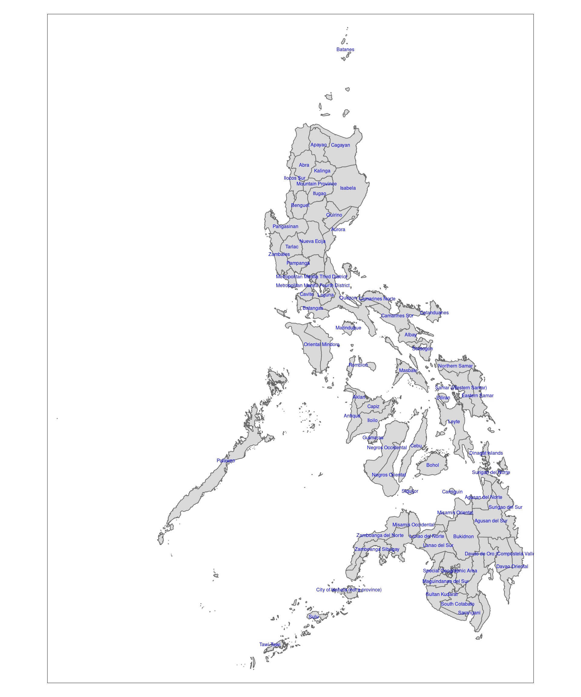
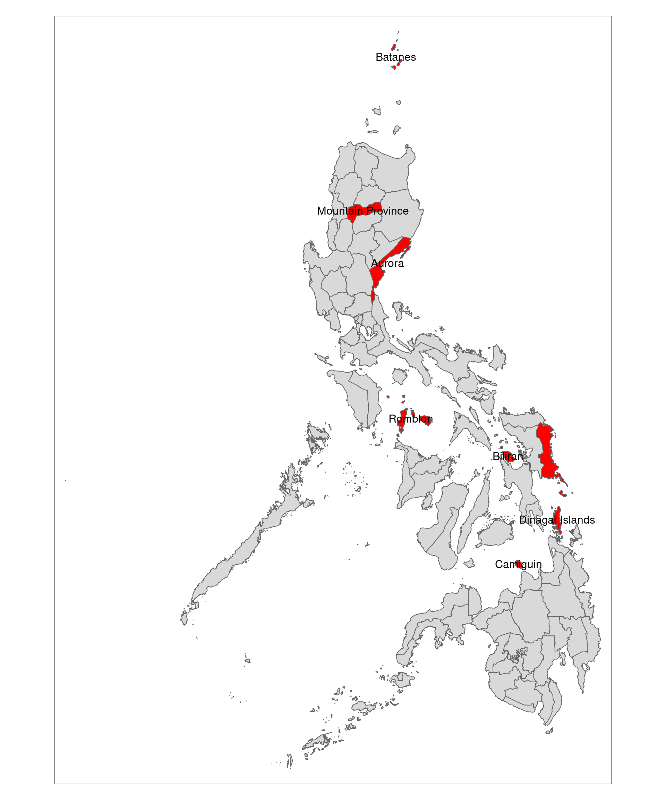
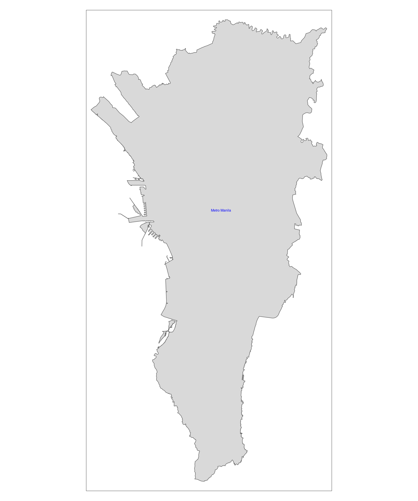
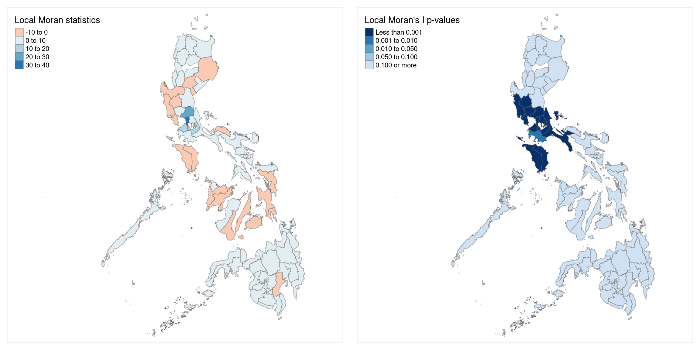
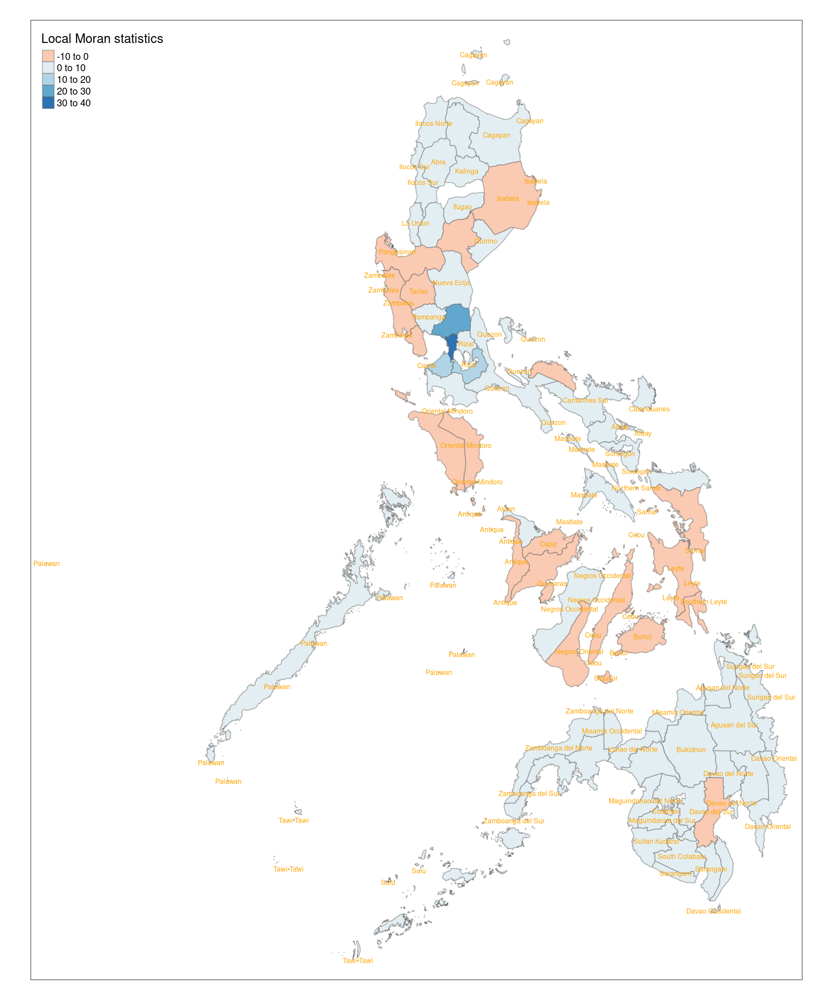
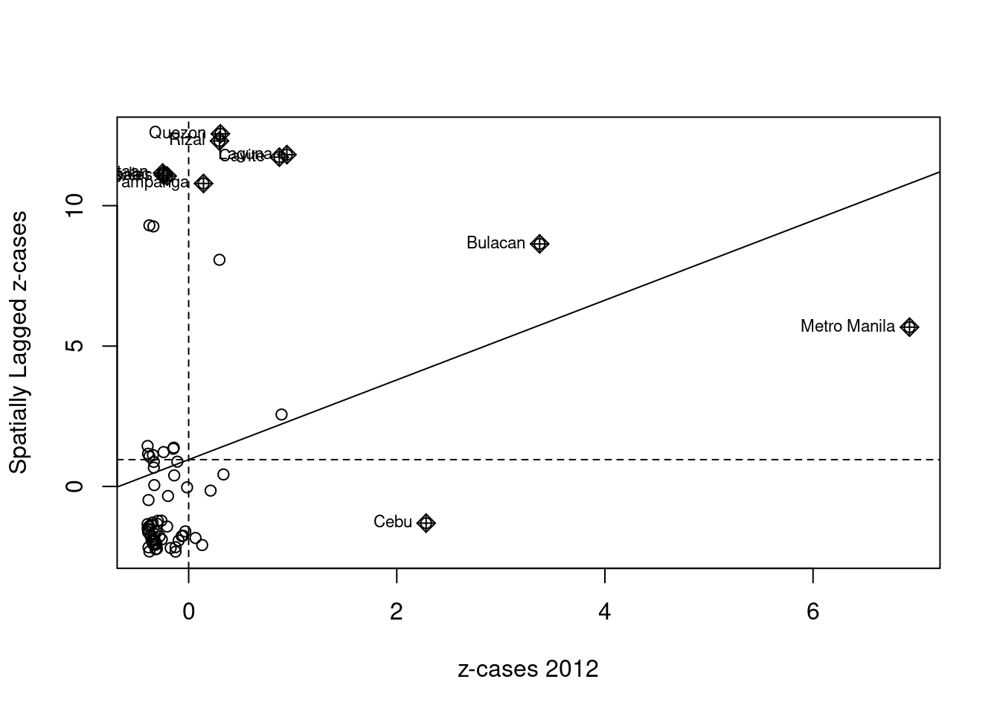
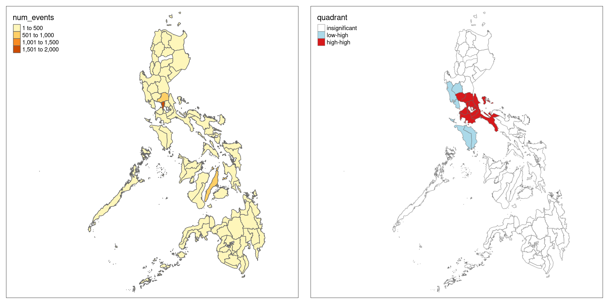
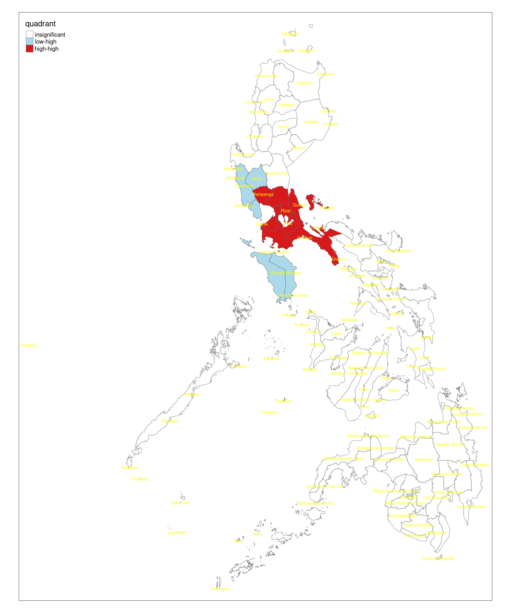
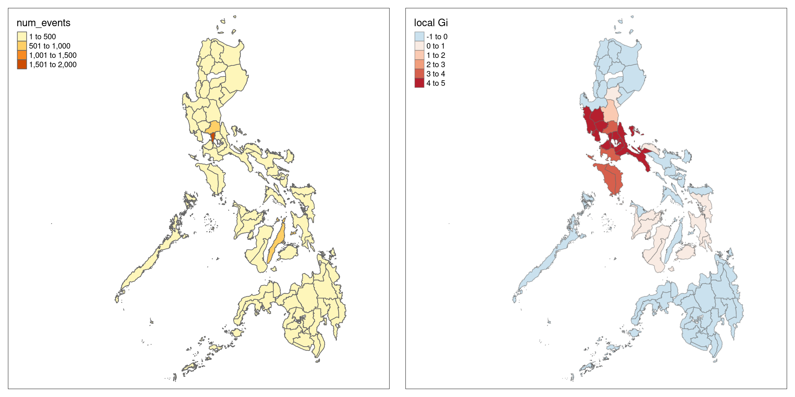
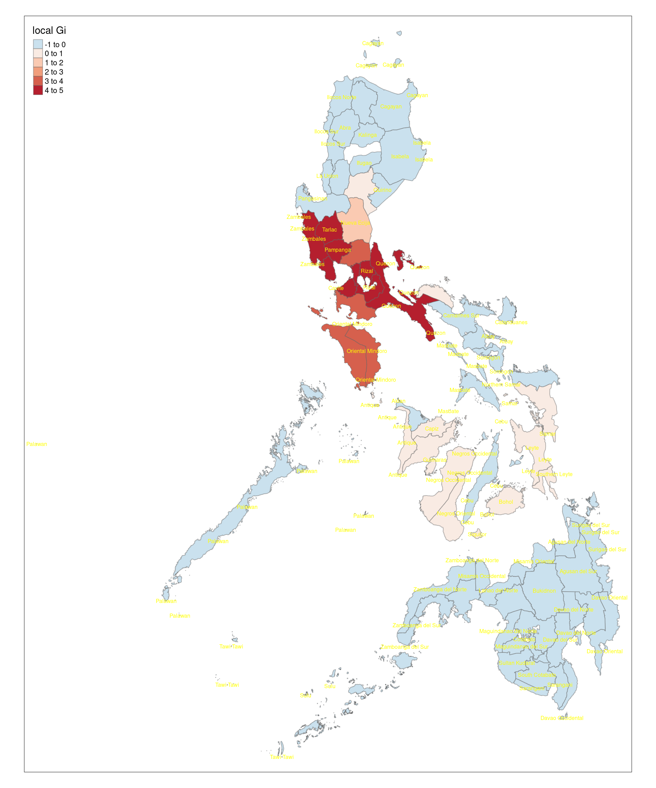

pacman::p_load(sf, tidyverse, tmap, spdep, knitr)Take Home Exercise 3
The Philippines’ “War on Drugs,” initiated under President Rodrigo Duterte’s administration in 2016, represents one of the most controversial law enforcement campaigns in recent Southeast Asian history. This study employs advanced geospatial analytical techniques to examine the spatial and temporal distribution of drug-related killings across the Philippine archipelago from 2016 to 2024. Through Spatial Point Patterns Analysis and Spatio-Temporal Point Patterns Analysis, this research seeks to identify potential geographic clustering of incidents and evaluate the evolving pattern of cases across two presidential administrations. By analyzing the geographic distribution and temporal trends of these events, this study aims to provide empirical insights into both the implementation of the anti-drug campaign under both President Duterte’s and President Ferdinand Marcos Jr.’s administration, contributing to a data-driven understanding of this significant public policy issue.
Main data processing
Import dependencies
Import data
provinces_sf <- st_read("data", layer = "phl_admbnda_adm2_psa_namria_20231106")Reading layer `phl_admbnda_adm2_psa_namria_20231106' from data source
`/home/tropicbliss/GitHub/quarto-project/Take-home_Ex/Take-home_Ex03/data'
using driver `ESRI Shapefile'
Simple feature collection with 88 features and 13 fields
Geometry type: MULTIPOLYGON
Dimension: XY
Bounding box: xmin: 114.2779 ymin: 4.587294 xmax: 126.605 ymax: 21.12189
Geodetic CRS: WGS 84drugs_data <- read_csv("data/2016-01-01-2024-06-30-Philippines.csv")Rows: 6921 Columns: 31
── Column specification ────────────────────────────────────────────────────────
Delimiter: ","
chr (23): event_id_cnty, event_date, disorder_type, event_type, sub_event_ty...
dbl (8): year, time_precision, iso, latitude, longitude, geo_precision, fat...
ℹ Use `spec()` to retrieve the full column specification for this data.
ℹ Specify the column types or set `show_col_types = FALSE` to quiet this message.tmap_mode("plot")tmap mode set to plottingtm_shape(provinces_sf) +
tm_polygons() +
tm_text("ADM2_EN", col = "blue", size = 0.5, remove.overlap = TRUE)
Data wrangling
To combine the geographical spatial data with the aspatial drug cases data, we need to make sure that the province names in both data-frames are normalised.
can_be_left_joined <- all(provinces_sf$ADM2_EN %in% drugs_data$admin2)
can_be_left_joined[1] FALSEIt seems like not all province names in drugs_data is found in provinces_sf. This could be due to irregular naming conventions. Let’s see what are the discrepancies.
# values in provinces_sf not in drugs_data
non_matching_values <- setdiff(provinces_sf$ADM2_EN, drugs_data$admin2)
non_matching_values [1] "Batanes" "Aurora"
[3] "Eastern Samar" "Samar (Western Samar)"
[5] "Biliran" "City of Isabela (not a province)"
[7] "Camiguin" "Davao de Oro (Compostela Valley)"
[9] "Cotabato (North Cotabato)" "Metropolitan Manila First District"
[11] "Metropolitan Manila Second District" "Metropolitan Manila Third District"
[13] "Metropolitan Manila Fourth District" "Mountain Province"
[15] "Dinagat Islands" "Marinduque"
[17] "Romblon" "Special Geographic Area" As we can see, we have 18 province names that are not found in drugs_data.
unique_values <- sort(unique(drugs_data$admin2))
unique_values [1] "Abra" "Agusan del Norte" "Agusan del Sur"
[4] "Aklan" "Albay" "Antique"
[7] "Apayao" "Basilan" "Bataan"
[10] "Batangas" "Benguet" "Bohol"
[13] "Bukidnon" "Bulacan" "Cagayan"
[16] "Camarines Norte" "Camarines Sur" "Capiz"
[19] "Catanduanes" "Cavite" "Cebu"
[22] "Cotabato" "Davao de Oro" "Davao del Norte"
[25] "Davao del Sur" "Davao Occidental" "Davao Oriental"
[28] "Guimaras" "Ifugao" "Ilocos Norte"
[31] "Ilocos Sur" "Iloilo" "Isabela"
[34] "Kalinga" "La Union" "Laguna"
[37] "Lanao del Norte" "Lanao del Sur" "Leyte"
[40] "Maguindanao del Norte" "Maguindanao del Sur" "Masbate"
[43] "Metropolitan Manila" "Misamis Occidental" "Misamis Oriental"
[46] "Negros Occidental" "Negros Oriental" "Northern Samar"
[49] "Nueva Ecija" "Nueva Vizcaya" "Occidental Mindoro"
[52] "Oriental Mindoro" "Palawan" "Pampanga"
[55] "Pangasinan" "Quezon" "Quirino"
[58] "Rizal" "Samar" "Sarangani"
[61] "Siquijor" "Sorsogon" "South Cotabato"
[64] "Southern Leyte" "Sultan Kudarat" "Sulu"
[67] "Surigao del Norte" "Surigao del Sur" "Tarlac"
[70] "Tawi-Tawi" "Zambales" "Zamboanga del Norte"
[73] "Zamboanga del Sur" "Zamboanga Sibugay" However, upon further analysis the names seem to all be in order, except the fact that the provinces of Aurora, Batanes, Biliran, Camiguin, Dinagat Islands, Eastern Samar, Ilocos Norte, Romblon are not mentioned in the drug data. It seems like no drug cases has ever been reported according to our data from the year 2016 to 2024.
Many of these areas (Batanes, Camiguin, Dinagat Islands, Romblon) are island provinces and Aurora and Eastern Samar are relatively remote. These areas have more dispersed populations and are less accessible, and hence limited infrastructure might affect both drug trafficking and reporting.
Let’s map it out to see what this is all about.
not_in_data <- c("Aurora", "Batanes", "Biliran", "Camiguin", "Dinagat Islands", "Eastern Samar", "Mountain Province", "Romblon")
tmap_mode("plot")tmap mode set to plottingtm_shape(provinces_sf) +
tm_polygons() +
tm_shape(provinces_sf %>% filter(ADM2_EN %in% not_in_data)) +
tm_polygons(col = "red") +
tm_text("ADM2_EN", col = "black", remove.overlap = TRUE)
Now, we need to rename the province names in both sets of data to make them consistent so joining can occur.
drugs_data <- drugs_data %>% mutate(admin2 = recode(admin2, "Metropolitan Manila" = "Metro Manila"))province_names <- sort(provinces_sf$ADM2_EN)
province_names [1] "Abra" "Agusan del Norte"
[3] "Agusan del Sur" "Aklan"
[5] "Albay" "Antique"
[7] "Apayao" "Aurora"
[9] "Basilan" "Bataan"
[11] "Batanes" "Batangas"
[13] "Benguet" "Biliran"
[15] "Bohol" "Bukidnon"
[17] "Bulacan" "Cagayan"
[19] "Camarines Norte" "Camarines Sur"
[21] "Camiguin" "Capiz"
[23] "Catanduanes" "Cavite"
[25] "Cebu" "City of Isabela (not a province)"
[27] "Cotabato (North Cotabato)" "Davao de Oro (Compostela Valley)"
[29] "Davao del Norte" "Davao del Sur"
[31] "Davao Occidental" "Davao Oriental"
[33] "Dinagat Islands" "Eastern Samar"
[35] "Guimaras" "Ifugao"
[37] "Ilocos Norte" "Ilocos Sur"
[39] "Iloilo" "Isabela"
[41] "Kalinga" "La Union"
[43] "Laguna" "Lanao del Norte"
[45] "Lanao del Sur" "Leyte"
[47] "Maguindanao del Norte" "Maguindanao del Sur"
[49] "Marinduque" "Masbate"
[51] "Metropolitan Manila First District" "Metropolitan Manila Fourth District"
[53] "Metropolitan Manila Second District" "Metropolitan Manila Third District"
[55] "Misamis Occidental" "Misamis Oriental"
[57] "Mountain Province" "Negros Occidental"
[59] "Negros Oriental" "Northern Samar"
[61] "Nueva Ecija" "Nueva Vizcaya"
[63] "Occidental Mindoro" "Oriental Mindoro"
[65] "Palawan" "Pampanga"
[67] "Pangasinan" "Quezon"
[69] "Quirino" "Rizal"
[71] "Romblon" "Samar (Western Samar)"
[73] "Sarangani" "Siquijor"
[75] "Sorsogon" "South Cotabato"
[77] "Southern Leyte" "Special Geographic Area"
[79] "Sultan Kudarat" "Sulu"
[81] "Surigao del Norte" "Surigao del Sur"
[83] "Tarlac" "Tawi-Tawi"
[85] "Zambales" "Zamboanga del Norte"
[87] "Zamboanga del Sur" "Zamboanga Sibugay" # NOTE: The City of Isabela is treated separately from Basilan province as it is a component city but belongs to a different region than its mother province, but we will merge both of them to make this simpler to understand
provinces_sf <- provinces_sf %>% mutate(ADM2_EN = recode(ADM2_EN, "City of Isabela (not a province)" = "Basilan", "Cotabato (North Cotabato)" = "Cotabato", "Davao de Oro (Compostela Valley)" = "Davao de Oro", "Samar (Western Samar)" = "Samar", "Metropolitan Manila First District" = "Metro Manila", "Metropolitan Manila Second District" = "Metro Manila", "Metropolitan Manila Third District" = "Metro Manila", "Metropolitan Manila Fourth District" = "Metro Manila"))Now, I just need to make sure that there are no provinces that I missed.
non_matching_values <- setdiff(drugs_data$admin2, provinces_sf$ADM2_EN)
non_matching_valuescharacter(0)Nice!
Now, we simply need to merge the duplicate provinces together in provinces_sf.
provinces_sf <- provinces_sf %>% select(1, 14)merged_provinces_sf <- provinces_sf %>% group_by(ADM2_EN) %>% summarise(geometry = st_union(geometry))tmap_mode("plot")tmap mode set to plottingtm_shape(merged_provinces_sf %>% filter(ADM2_EN == "Metro Manila")) +
tm_polygons() +
tm_text("ADM2_EN", col = "blue", size = 0.5, remove.overlap = TRUE)
Where are the main areas of concentrated drug abuse, and are there any unusual patterns or high-risk spots?
To identify specific areas of concentrated drug-related incidents in the Philippines, we employ two complementary local spatial analysis techniques: Local Indicators of Spatial Association (LISA) and Getis-Ord Gi* statistics. While our previous global spatial autocorrelation analysis confirmed the presence of spatial clustering across the country, these local measures allow us to pinpoint exactly where these clusters occur and distinguish between different types of spatial associations. LISA analysis helps identify not only clusters of high-value areas (hot spots) and low-value areas (cold spots) but also spatial outliers where provinces differ significantly from their neighbors. The Getis-Ord Gi* statistic complements this by specifically identifying statistically significant hot spots and cold spots, providing a comprehensive understanding of where drug-related incidents are concentrated and where they are notably absent. Together, these methods enable us to map and analyze the geographic distribution of drug-related incidents at a more granular level, crucial for targeted policy interventions.
Analysis
LISA identifies clusters and outliers by calculating spatial autocorrelation for individual spatial units such as provinces rather than the entire dataset, as global Moran’s I does.
For example, if you were analyzing the number of cases of drug use across different provinces in Philippines, LISA would allow you to identify which provinces have drug use counts that are spatially autocorrelated with neighboring provinces. It can highlight specific counties where drug use is either unusually high or low compared to their surroundings.
Local Indicators of Spatial Association (LISA) - Anselin’s Local Moran’s I
Data wrangling
By mapping out the p-value of Local Moran’s I (LISA), we can determine the statistical significance of the observed local spatial autocorrelation. This step is crucial because it helps distinguish between areas where the clustering or dispersion of drug cases is meaningful and areas where any observed pattern could be due to random chance.
To identify local spatial clusters and outliers, we’ll use the localmoran() function from the spdep package. This function calculates local Moran’s I values (Ii) for each province. It takes two main inputs: the province-level drug incident counts (zi values) and our previously created spatial weights matrix that defines each province’s neighbors and their relationships. The resulting Ii values will help us identify where significant spatial clusters or outliers exist in our drug incident data across the Philippines.
localmoran(x, # The variable you're analyzing (e.g., number of drug cases)
listw, # Spatial weights matrix defining neighborhood relationships
zero.policy = NULL, # How to handle regions with no neighbors
na.action = na.fail, # How to handle NA values
alternative = "two.sided", # Type of alternative hypothesis
p.adjust.method = "none", # Method for p-value adjustment
mlvar = TRUE, # Whether to compute mean and variance
spChk = NULL) # Spatial weights checkfips <- order(province_drug_stats_all$ADM2_EN)
localMI <- localmoran(province_drug_stats_all$num_events, knn_lw)
head(localMI) Ii E.Ii Var.Ii Z.Ii Pr(z != E(Ii))
1 0.6839405 -0.0117334671 0.7945861 0.7804323 0.4351364
2 0.6856409 -0.0090315751 0.6118514 0.8880902 0.3744922
3 0.7198863 -0.0098050710 0.6641790 0.8953578 0.3705959
4 0.5994218 -0.0141491866 0.9578465 0.6269268 0.5307072
5 0.1873232 -0.0008958409 0.0607601 0.7635796 0.4451178
6 -0.3888712 -0.0114473901 0.7752448 -0.4286570 0.6681729The localmoran() function produces five important values for each location (province in our case):
Local Moran’s I (Ii): The actual measure of local spatial autocorrelation
Expected Value (E.Ii): What value we would expect if there was no spatial pattern
Variance (Var.Ii): How much we expect the value to vary under spatial randomness
Z-score (Z.Ii): How many standard deviations the actual value is from what we expect
P-value (Pr()): The statistical significance of the spatial pattern, indicating how likely the observed pattern could occur by chance
These values help us determine which provinces show significant spatial clustering or outlier patterns in drug-related incidents.
The code chunk below uses printCoefmat() to display the local Moran’s I statistics in a formatted table, making it easier to examine the results for each province.
printCoefmat(data.frame(
localMI[fips,],
row.names=province_drug_stats_all$ADM2_EN[fips]),
check.names=FALSE) Ii E.Ii Var.Ii Z.Ii
Abra 6.8394e-01 -1.1733e-02 7.9459e-01 7.8043e-01
Agusan del Norte 6.8564e-01 -9.0316e-03 6.1185e-01 8.8809e-01
Agusan del Sur 7.1989e-01 -9.8051e-03 6.6418e-01 8.9536e-01
Aklan 5.9942e-01 -1.4149e-02 9.5785e-01 6.2693e-01
Albay 1.8732e-01 -8.9584e-04 6.0760e-02 7.6358e-01
Antique -3.8887e-01 -1.1447e-02 7.7524e-01 -4.2866e-01
Apayao 5.5162e-01 -1.4149e-02 9.5785e-01 5.7809e-01
Basilan 7.1113e-01 -1.1447e-02 7.7524e-01 8.2066e-01
Bataan -2.8222e+00 -6.0469e-03 4.0983e-01 -4.3990e+00
Batangas 2.4228e+00 -8.5203e-03 5.7726e-01 3.2000e+00
Benguet 6.8258e-02 -3.8215e-03 2.5908e-01 1.4161e-01
Bohol -2.0017e-01 -1.9843e-03 1.3457e-01 -5.4027e-01
Bukidnon 4.9903e-01 -1.2613e-02 8.5403e-01 5.5364e-01
Bulacan 2.9540e+01 -1.1058e+00 6.3163e+01 3.8560e+00
Cagayan 9.4944e-02 -2.7703e-04 1.8791e-02 6.9464e-01
Camarines Norte -2.0042e-01 -2.1045e-03 1.4271e-01 -5.2497e-01
Camarines Sur 4.9927e-04 -2.1960e-05 1.4896e-03 1.3505e-02
Capiz -4.0795e-01 -1.3835e-02 9.3661e-01 -4.0723e-01
Catanduanes 6.3945e-01 -1.4467e-02 9.7932e-01 6.6078e-01
Cavite 1.0361e+01 -7.3807e-02 4.9538e+00 4.6881e+00
Cebu -3.0233e+00 -5.0617e-01 3.1853e+01 -4.4600e-01
Cotabato 1.1854e-01 -4.2560e-04 2.8868e-02 7.0018e-01
Davao de Oro 6.5137e-01 -1.2913e-02 8.7432e-01 7.1042e-01
Davao del Norte 6.0817e-01 -1.0886e-02 7.3727e-01 7.2097e-01
Davao del Sur -1.2268e-01 -4.2264e-04 2.8667e-02 -7.2209e-01
Davao Occidental 5.3604e-01 -1.5113e-02 1.0230e+00 5.4493e-01
Davao Oriental 6.5452e-01 -1.2913e-02 8.7432e-01 7.1379e-01
Guimaras -4.6053e-01 -1.4788e-02 1.0010e+00 -4.4551e-01
Ifugao 5.9736e-01 -1.5113e-02 1.0230e+00 6.0556e-01
Ilocos Norte 4.9328e-01 -6.4673e-03 4.3829e-01 7.5487e-01
Ilocos Sur 2.7597e-01 -1.5391e-03 1.0438e-01 8.5897e-01
Iloilo -9.7425e-02 -1.1503e-03 7.8018e-02 -3.4468e-01
Isabela -2.7472e-01 -1.6393e-03 1.1117e-01 -8.1901e-01
Kalinga 5.4709e-01 -1.3835e-02 9.3661e-01 5.7960e-01
La Union 2.9900e-01 -4.1571e-03 2.8182e-01 5.7106e-01
Laguna 1.1308e+01 -8.6589e-02 5.8010e+00 4.7307e+00
Lanao del Norte 5.0830e-01 -9.2859e-03 6.2906e-01 6.5258e-01
Lanao del Sur 5.0267e-01 -7.5799e-03 5.1361e-01 7.1197e-01
Leyte -5.5277e-02 -1.8677e-03 1.2666e-01 -1.5007e-01
Maguindanao del Norte 3.2360e-01 -6.6827e-03 4.5288e-01 4.9079e-01
Maguindanao del Sur 3.6696e-01 -8.5336e-03 5.7815e-01 4.9383e-01
Masbate 6.3495e-01 -1.0338e-02 7.0025e-01 7.7113e-01
Metro Manila 3.9839e+01 -4.6643e+00 1.0557e+02 4.3313e+00
Misamis Occidental 6.9457e-01 -1.2316e-02 8.3398e-01 7.7405e-01
Misamis Oriental 2.9609e-01 -1.5391e-03 1.0438e-01 9.2122e-01
Negros Occidental 1.4492e-01 -1.0871e-02 7.3626e-01 1.8156e-01
Negros Oriental -2.9899e-01 -5.6407e-03 3.8232e-01 -4.7443e-01
Northern Samar 6.4146e-01 -1.4788e-02 1.0010e+00 6.5591e-01
Nueva Ecija 2.3189e+00 -7.7460e-02 5.1962e+00 1.0512e+00
Nueva Vizcaya -1.6143e-02 -1.0610e-02 7.1864e-01 -6.5269e-03
Occidental Mindoro -3.5566e+00 -1.3835e-02 9.3661e-01 -3.6607e+00
Oriental Mindoro -3.1819e+00 -1.1165e-02 7.5614e-01 -3.6463e+00
Palawan 8.8608e-01 -1.3835e-02 9.3661e-01 9.2987e-01
Pampanga 1.5605e+00 -1.9779e-03 1.3413e-01 4.2662e+00
Pangasinan -3.1594e-02 -4.3207e-03 2.9291e-01 -5.0394e-02
Quezon 3.8781e+00 -9.0179e-03 6.1093e-01 4.9731e+00
Quirino 1.8947e-01 -1.4467e-02 9.7932e-01 2.0608e-01
Rizal 3.6928e+00 -8.5203e-03 5.7726e-01 4.8716e+00
Samar -2.2742e-01 -1.0886e-02 7.3727e-01 -2.5218e-01
Sarangani 4.5280e-01 -1.1733e-02 7.9459e-01 5.2113e-01
Siquijor -5.7628e-01 -1.5113e-02 1.0230e+00 -5.5483e-01
Sorsogon 5.6028e-01 -1.0338e-02 7.0025e-01 6.8190e-01
South Cotabato 5.2060e-02 -1.0002e-04 6.7843e-03 6.3326e-01
Southern Leyte -2.9681e-01 -1.0886e-02 7.3727e-01 -3.3299e-01
Sultan Kudarat 4.0599e-01 -8.7808e-03 5.9488e-01 5.3777e-01
Sulu 6.3915e-01 -9.2859e-03 6.2906e-01 8.1756e-01
Surigao del Norte 6.3908e-01 -1.2613e-02 8.5403e-01 7.0519e-01
Surigao del Sur 8.4777e-01 -1.4467e-02 9.7932e-01 8.7129e-01
Tarlac -2.7081e+00 -5.6407e-03 3.8232e-01 -4.3706e+00
Tawi-Tawi 6.5403e-01 -9.8051e-03 6.6418e-01 8.1455e-01
Zambales -2.3177e+00 -4.1571e-03 2.8182e-01 -4.3580e+00
Zamboanga del Norte 6.6912e-01 -9.8051e-03 6.6418e-01 8.3307e-01
Zamboanga del Sur 3.8401e-01 -2.8994e-03 1.9660e-01 8.7260e-01
Zamboanga Sibugay 6.7440e-01 -1.0338e-02 7.0025e-01 8.1827e-01
Pr.z....E.Ii..
Abra 0.4351
Agusan del Norte 0.3745
Agusan del Sur 0.3706
Aklan 0.5307
Albay 0.4451
Antique 0.6682
Apayao 0.5632
Basilan 0.4118
Bataan 0.0000
Batangas 0.0014
Benguet 0.8874
Bohol 0.5890
Bukidnon 0.5798
Bulacan 0.0001
Cagayan 0.4873
Camarines Norte 0.5996
Camarines Sur 0.9892
Capiz 0.6838
Catanduanes 0.5088
Cavite 0.0000
Cebu 0.6556
Cotabato 0.4838
Davao de Oro 0.4774
Davao del Norte 0.4709
Davao del Sur 0.4702
Davao Occidental 0.5858
Davao Oriental 0.4754
Guimaras 0.6560
Ifugao 0.5448
Ilocos Norte 0.4503
Ilocos Sur 0.3904
Iloilo 0.7303
Isabela 0.4128
Kalinga 0.5622
La Union 0.5680
Laguna 0.0000
Lanao del Norte 0.5140
Lanao del Sur 0.4765
Leyte 0.8807
Maguindanao del Norte 0.6236
Maguindanao del Sur 0.6214
Masbate 0.4406
Metro Manila 0.0000
Misamis Occidental 0.4389
Misamis Oriental 0.3569
Negros Occidental 0.8559
Negros Oriental 0.6352
Northern Samar 0.5119
Nueva Ecija 0.2931
Nueva Vizcaya 0.9948
Occidental Mindoro 0.0003
Oriental Mindoro 0.0003
Palawan 0.3524
Pampanga 0.0000
Pangasinan 0.9598
Quezon 0.0000
Quirino 0.8367
Rizal 0.0000
Samar 0.8009
Sarangani 0.6023
Siquijor 0.5790
Sorsogon 0.4953
South Cotabato 0.5266
Southern Leyte 0.7391
Sultan Kudarat 0.5907
Sulu 0.4136
Surigao del Norte 0.4807
Surigao del Sur 0.3836
Tarlac 0.0000
Tawi-Tawi 0.4153
Zambales 0.0000
Zamboanga del Norte 0.4048
Zamboanga del Sur 0.3829
Zamboanga Sibugay 0.4132To visualize our local Moran’s I results geographically, we first need to join the local Moran’s I statistics with our spatial data. We’ll add these new statistical values to our existing spatial dataframe of provinces, allowing us to create maps that show spatial clustering patterns.
provinces.localMI <- cbind(province_drug_stats_all, localMI) %>%
rename(Pr.Ii = Pr.z....E.Ii..)Visualisation
This code below creates a side-by-side visualization of two key aspects of our local Moran’s I analysis. The left map displays the local Moran’s I statistics for each province using a red-blue color scheme, where contrasting colors help identify clusters and outliers. The right map shows the statistical significance (p-values) of these patterns using varying shades of blue, with darker blues indicating higher statistical significance at different thresholds (0.001, 0.01, 0.05, and 0.1). The maps are arranged horizontally with equal aspect ratios, allowing us to simultaneously examine both the strength of spatial associations and their statistical significance across the Philippines. Province boundaries are shown with semi-transparent borders (alpha = 0.5) to maintain visibility of the underlying patterns while preserving provincial context.
localMI.map <- tm_shape(provinces.localMI) +
tm_fill(col = "Ii",
style = "pretty",
palette = "RdBu",
title = "Local Moran statistics") +
tm_borders(alpha = 0.5)
pvalue.map <- tm_shape(provinces.localMI) +
tm_fill(col = "Pr.Ii",
breaks=c(-Inf, 0.001, 0.01, 0.05, 0.1, Inf),
palette="-Blues",
title = "Local Moran's I p-values") +
tm_borders(alpha = 0.5)
tmap_arrange(localMI.map, pvalue.map, asp=1, ncol=2)Variable(s) "Ii" contains positive and negative values, so midpoint is set to 0. Set midpoint = NA to show the full spectrum of the color palette.
The local Moran’s I (Ii) tells you the direction and strength of spatial clustering. A positive Ii means that province is similar to neighbors, which means that clustering occurs, and vice versa. If the Ii is close to zero, it means that no spatial patterns are detected. p-values tell you how statistically significant the pattern is.
Common thresholds:
p < 0.001: Very strong evidence
p < 0.01: Strong evidence
p < 0.05: Evidence
p < 0.1: Weak evidence
p > 0.1: No significant evidence
tm_shape(provinces.localMI) +
tm_fill(col = "Ii",
style = "pretty",
palette = "RdBu",
title = "Local Moran statistics") +
tm_borders(alpha = 0.5) +
tm_text("ADM2_EN", col = "orange", size = 0.5, remove.overlap = TRUE)Variable(s) "Ii" contains positive and negative values, so midpoint is set to 0. Set midpoint = NA to show the full spectrum of the color palette.
In the diagram, you can see that the province of Bulacan and the national capital region exhibit high amounts of clustering, and this is supported by their high p-values of less than 0.001, which suggests a very strong evidence of clustering.
The provinces of Bataan, Zambales, Tarlac, and Occidental Mindoro has a very strong evidence of a low amounts of clustering, supported by their negative Ii and p-values of less than 0.001.
Conclusion
This LISA (Local Indicators of Spatial Association) analysis reveals distinct patterns of drug-related incidents in the Philippines:
First, Bulacan and the National Capital Region show significant high-high clustering (positive Ii with p < 0.001), meaning these areas consistently have high numbers of drug-related incidents and are surrounded by other areas with similarly high numbers. This suggests a concentrated hot spot of drug-related activities in the metropolitan region, likely influenced by factors such as urban density, economic activity, and interconnected transportation networks.
In contrast, provinces like Bataan, Zambales, Tarlac, and Occidental Mindoro demonstrate significant low-low clustering (negative Ii with p < 0.001), indicating these areas have low numbers of incidents and are surrounded by areas with similarly low numbers. This pattern is particularly interesting given some of these provinces’ proximity to the high-incident metro area, suggesting that certain geographic, socio-economic, or administrative factors might be effectively limiting the spread of drug-related activities into these regions.
These findings highlight the strong spatial component of drug-related incidents in the Philippines, with clear geographic patterns that could inform targeted intervention strategies and resource allocation for drug prevention and control efforts.
Moran scatterplot
In order to better understand the nature and strength of spatial relationships in drug-related incidents across provinces, we will analyze the Moran scatterplot using standardized variables. By standardizing our data, we can interpret values in terms of standard deviations from the mean, making it easier to identify significant patterns and outliers. The Moran scatterplot will display each province’s standardized drug incident rate on the x-axis against its spatially lagged standardized values (weighted average of neighboring provinces) on the y-axis. This visualization helps us identify four types of spatial associations: high-high clusters (upper-right quadrant), low-low clusters (lower-left quadrant), and spatial outliers where provinces differ significantly from their neighbors (upper-left and lower-right quadrants). Through this standardized approach, we can more intuitively interpret the relative positions of provinces and their spatial relationships.
First, we’ll standardize our variable using the scale() function. This process transforms our data by:
Centering: Subtracting the mean value from each observation
Scaling: Dividing each centered value by the standard deviation
This standardization allows us to express our drug incident values in terms of how many standard deviations they are from the mean, making patterns and outliers easier to identify.
province_drug_stats_all$Z.cases <- scale(province_drug_stats_all$num_events) %>% as.vector The as.vector() function ensures our standardized values are in a simple vector format that can be easily incorporated into our dataframe. With our data now standardized and properly formatted, we can create the Moran scatterplot to visualize spatial relationships between provinces and their neighbors.
This Moran scatterplot below shows drug incidents in each province (x-axis) against the average drug incidents in their neighboring provinces (y-axis), with both variables standardized (shown as z-scores). The plot reveals spatial patterns by dividing into quadrants
moran.plot(x, # The variable you're analyzing (e.g., number of drug cases)
listw, # Spatial weights matrix defining neighborhood relationships
zero.policy = NULL, # How to handle regions with no neighbors
spChk = NULL, # Spatial weights check
labels = NULL, # Labels for points (e.g., province names)
xlab = NULL, # Label for x-axis
ylab = NULL, # Label for y-axis
quiet = NULL) # Whether to suppress messagesnci <- moran.plot(province_drug_stats_all$Z.cases, knn_lw,
labels=as.character(province_drug_stats_all$ADM2_EN),
xlab="z-cases 2012",
ylab="Spatially Lagged z-cases")
Upper-right (HH): Provinces with high drug incidents near other high-incident provinces
Lower-left (LL): Provinces with low drug incidents near other low-incident provinces
Lower-right (HL): High-incident provinces surrounded by low-incident provinces (spatial outliers)
Upper-left (LH): Low-incident provinces surrounded by high-incident provinces (spatial outliers)
Plotting LISA map
Let’s create a LISA (Local Indicators of Spatial Association) cluster map to visualize significant spatial clusters and outliers of drug-related incidents across provinces.
quadrant <- vector(mode="numeric",length=nrow(localMI))We’ll then calculate the weighted average of drug cases in neighboring provinces (spatial lag) and standardize these values by centering them around their mean. This allows us to compare each province’s values with the average of its neighbours.
province_drug_stats_all$lag_cases <- lag.listw(knn_lw, province_drug_stats_all$num_events)
DV <- province_drug_stats_all$lag_cases - mean(province_drug_stats_all$lag_cases) Next, we’ll standardize the local Moran’s I values by centering them around their mean, making it easier to identify significant deviations from average spatial patterns.
LM_I <- localMI[,1] - mean(localMI[,1])Let’s then establish a significance threshold (p-value) to determine which local Moran’s I values represent statistically significant spatial patterns.
signif <- 0.05Let’s identify the four types of spatial clusters:
Low-Low (1): Provinces with low values near other low values
Low-High (2): Provinces with low values near high values
High-Low (3): Provinces with high values near low values
High-High (4): Provinces with high values near other high values
quadrant[DV <0 & LM_I>0] <- 1
quadrant[DV >0 & LM_I<0] <- 2
quadrant[DV <0 & LM_I<0] <- 3
quadrant[DV >0 & LM_I>0] <- 4Finally, we’ll assign a value of 0 to provinces where the local Moran’s I values are not statistically significant, indicating areas with no clear spatial clustering pattern.
quadrant[localMI[,5]>signif] <- 0Let’s create a map to visualize these LISA (Local Indicators of Spatial Association) classifications, showing where significant spatial clusters and outliers occur across the Philippines.
cases <- qtm(province_drug_stats_all, "num_events")
provinces.localMI$quadrant <- quadrant
colors <- c("#ffffff", "#2c7bb6", "#abd9e9", "#fdae61", "#d7191c")
clusters <- c("insignificant", "low-low", "low-high", "high-low", "high-high")
LISAmap <- tm_shape(provinces.localMI) +
tm_fill(col = "quadrant",
style = "cat",
palette = colors[c(sort(unique(quadrant)))+1],
labels = clusters[c(sort(unique(quadrant)))+1],
popup.vars = c("")) +
tm_view(set.zoom.limits = c(11,17)) +
tm_borders(alpha=0.5)
tmap_arrange(cases, LISAmap,
asp=1, ncol=2)
Low-high: Regions with low values and neighboring regions with high values (negative deviation with positive local Moran’s I). This quadrant identifies low-value outliers surrounded by high-value areas.
High-low: Regions with high values and neighboring regions with low values (positive deviation with negative local Moran’s I). This quadrant identifies high-value outliers surrounded by low-value areas.
Low-low: Regions with low values and neighboring regions also with low values (negative deviation with negative local Moran’s I). This identifies clusters of low values, where both the region and its neighbors have similarly low values.
High-high: Regions with high values and neighboring regions also with high values (positive deviation with positive local Moran’s I). This identifies clusters of high values, where both the region and its neighbors have high values.
High-high and low-low are considered clusters. High-low and low-high are considered outliers.
tm_shape(provinces.localMI) +
tm_fill(col = "quadrant",
style = "cat",
palette = colors[c(sort(unique(quadrant)))+1],
labels = clusters[c(sort(unique(quadrant)))+1],
popup.vars = c("")) +
tm_text("ADM2_EN", col = "yellow", size = 0.5, remove.overlap = TRUE) +
tm_view(set.zoom.limits = c(11,17)) +
tm_borders(alpha=0.5)
The LISA analysis reveals a distinct spatial pattern centered around Metro Manila, where multiple provinces exhibit high-high clustering, indicating a concentrated area of drug-related incidents that spans across neighboring provinces. In contrast, provinces like Bataan, Occidental Mindoro, Bataan, Zambales, and Tarlac emerge as low-high outliers, maintaining lower incident rates despite their proximity to areas of high drug-related activity.
The distinct spatial patterns revealed by the LISA analysis suggest that drug-related incidents in the Philippines follow a complex geographic distribution that isn’t solely determined by proximity to high-incident areas. The strong high-high clustering around Metro Manila indicates that urban agglomeration, shared infrastructure, and interconnected socio-economic networks likely facilitate the concentration of drug-related activities in the metropolitan region.
However, the presence of low-high outliers (Bataan, Occidental Mindoro, Zambales, and Tarlac) demonstrates that proximity to high-incident areas doesn’t inevitably lead to high numbers of drug-related incidents. These provinces’ success in maintaining lower rates despite their location near Metro Manila’s hot spot suggests that local factors such as effective enforcement strategies, geographic barriers, or distinct socio-economic conditions can successfully mitigate the spread of drug-related activities. This finding is particularly significant as it indicates that local interventions and characteristics can overcome the influence of neighboring high-incident areas.
These patterns suggest that drug prevention and control strategies should be tailored to local contexts rather than assuming a one-size-fits-all approach. Understanding how these low-high outlier provinces maintain their status could provide valuable insights for developing effective intervention strategies in other regions facing similar challenges.
Getis-Ord Gi Statistic
Hotspot and coldspot analysis is a spatial statistical method used to pinpoint areas where high or low values of a specific variable cluster together geographically. It aids in uncovering significant spatial patterns, emphasizing regions where extreme values, either high or low, are concentrated.
We need to use data from nearest neighbour column to calculate the inverse of the distance between each neighbour.
Areas with higher Gi values in Getis-Ord Gi analysis represent hotspots, in which regions with a higher than expected GDP per capita cluster together. Note that hotspots and coldspots are not considered outliers.
Since we are using adaptive distance earlier, we will similarly use adaptive distance weights for the sake of consistency.
This code below calculates the Getis-Ord Gi* statistic for each province to identify significant hot spots and cold spots of drug-related incidents across the Philippines. Using our k-nearest neighbors spatial weights, the localG() function computes these statistics for each province based on their drug incident counts. We then append these Gi* values to our existing provincial dataset and rename the new column to ‘gstat_adaptive’, creating a comprehensive dataset that includes both our original data and the hot spot analysis results. This analysis will help us identify where significantly high or low numbers of drug-related incidents are clustering geographically.
localG(x, # The variable you're analyzing (e.g., number of drug cases)
listw, # Spatial weights matrix defining neighborhood relationships
zero.policy = NULL, # How to handle regions with no neighbors
spChk = NULL, # Spatial weights check
return_internals = FALSE) # Whether to return internal calculationsgi.adaptive <- localG(province_drug_stats_all$num_events, knn_lw)
cases.gi <- cbind(province_drug_stats_all, as.matrix(gi.adaptive)) %>%
rename(gstat_adaptive = as.matrix.gi.adaptive.)Let’s create a choropleth map using the tmap package to visualize where significant hot spots and cold spots of drug-related incidents are located across the Philippines. This visualization will display the Gi* statistics we calculated using our k-nearest neighbor weights, helping us identify areas with unusually high or low concentrations of drug-related incidents.
Gimap <- tm_shape(cases.gi) +
tm_fill(col = "gstat_adaptive",
style = "pretty",
palette="-RdBu",
title = "local Gi") +
tm_borders(alpha = 0.5)
tmap_arrange(cases,
Gimap,
asp=1,
ncol=2)Variable(s) "gstat_adaptive" contains positive and negative values, so midpoint is set to 0. Set midpoint = NA to show the full spectrum of the color palette.
A high Gi value (positive z-score) indicates a hotspot, meaning the area has a concentration of high values (e.g., high number of drug cases) surrounded by other areas with similarly high values. This means that not only is the value in that area high, but the surrounding areas also exhibit high values, forming a cluster of high-intensity activity.
A low Gi value (negative z-score) indicates a coldspot, meaning the area has a concentration of low values surrounded by other areas with similarly low values. A low cluster suggests that the area and its neighbors are consistently below the overall average, indicating a region of low intensity.
tm_shape(cases.gi) +
tm_fill(col = "gstat_adaptive",
style = "pretty",
palette="-RdBu",
title = "local Gi") +
tm_borders(alpha = 0.5) +
tm_text("ADM2_EN", col = "yellow", size = 0.5, remove.overlap = TRUE)Variable(s) "gstat_adaptive" contains positive and negative values, so midpoint is set to 0. Set midpoint = NA to show the full spectrum of the color palette.
The Getis-Ord Gi* statistics reveal a clear core-periphery pattern of drug-related incidents in the Philippines, with the highest concentrations forming a contiguous region around Metro Manila. The provinces with the highest Gi* values (4-5) form a concentrated cluster including Metro Manila and its immediately surrounding provinces, suggesting that drug-related activities are most intense in this highly urbanized, interconnected region.
This pattern demonstrates a clear spatial gradient, with Gi* values gradually decreasing as distance from Metro Manila increases. The moderately high values (3-4) in provinces like Occidental Mindoro, Oriental Mindoro, Batangas, and Bulacan represent a transition zone, while provinces in the Visayas region (like Antique, Capiz, Iloilo) show significantly lower values (0-1). The lowest values (-1-0) are found in the most distant provinces, indicating that the influence of Metro Manila’s drug-related patterns diminishes substantially with distance.
This spatial distribution strongly suggests that drug-related incidents are influenced by factors associated with urbanization, population density, and proximity to the capital region. The clear geographic pattern implies that intervention strategies should be regionally coordinated but tailored to the different intensity levels observed across the country, with particularly intensive efforts focused on the high-value cluster around Metro Manila while maintaining preventive measures in lower-value areas.
Conclusion
The comprehensive spatial analysis of drug-related incidents in the Philippines demonstrates that geographic location plays a crucial role in their distribution, with clear patterns of concentration rather than random dispersion across the country. Multiple analytical methods consistently reveal a primary hot spot centered on Metro Manila and its surrounding provinces, with incident rates generally decreasing as distance from the capital region increases. However, this pattern is not uniform, as evidenced by several noteworthy exceptions such as Bataan and Occidental Mindoro, which maintain lower incident rates despite their proximity to high-incident areas, suggesting the effectiveness of local factors in mitigating drug-related activities.
These findings point to the need for a nuanced approach to drug prevention and control strategies. Rather than implementing uniform policies across all provinces, interventions should combine coordinated regional efforts, particularly around the Metro Manila cluster, with targeted local approaches informed by the success of outlier provinces. The clear spatial patterns indicate that resources and enforcement efforts should be strategically allocated, with intensive focus on identified hot spots while maintaining preventive measures in lower-incident areas. Additionally, the success of certain provinces in maintaining lower incident rates despite challenging geographic contexts offers valuable lessons that could be studied and potentially replicated in other regions.
The strong influence of geographic location on drug-related incidents, combined with the existence of successful outlier provinces, suggests that while spatial proximity to high-incident areas creates risk, it does not inevitably lead to high incident rates. This understanding should inform the development of more effective, geographically-aware intervention strategies that acknowledge both regional patterns and local capabilities in addressing drug-related challenges across the Philippines.